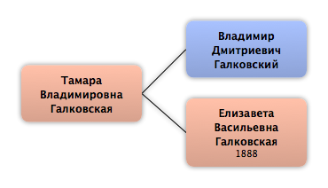

Домой
Домой
 Люди
Люди
 Семьи
Семьи
 Источники
Источники
 Диаграммы
Диаграммы
 Статистика
Статистика
Тамара Владимировна Галковская

Контекст

Родители
| Отец | Дата рождения | Мать | Дата рождения |
|---|---|---|---|
 Владимир Дмитриевич Галковский Владимир Дмитриевич Галковский
|
Елизавета Васильевна Галковская
|
1888 |
Родители и дети
| Партнёры | Дата рождения | Дети |
|---|
События
Факты
Медиа
Примечание
Источники
Родство
| Имя | Степень родства | Дата рождения | Место рождения | Дата смерти | Место смерти |
|---|---|---|---|---|---|
| Братья и сёстры | |||||
| Брат | 1909 | 1984 | |||
| Родителей | |||||
| Отец | |||||
| Мать | 1888 | 1966 | |||
| Племянники и племянницы | |||||
| Племянник | |||||
| Племянница | 1939 | ||||
| Внучатые племянники и внучатые племянницы | |||||
| Внучатый племянник | |||||
| Внучатая племянница | |||||